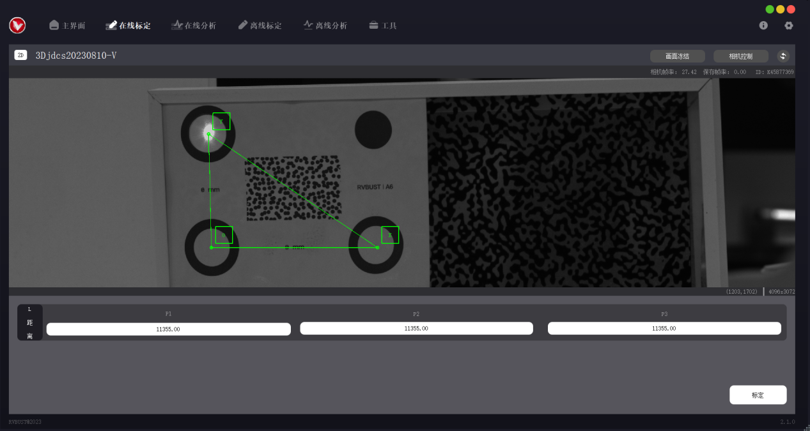
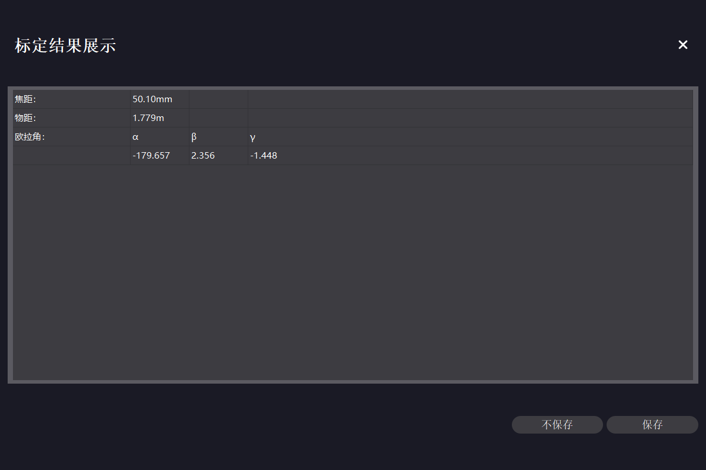
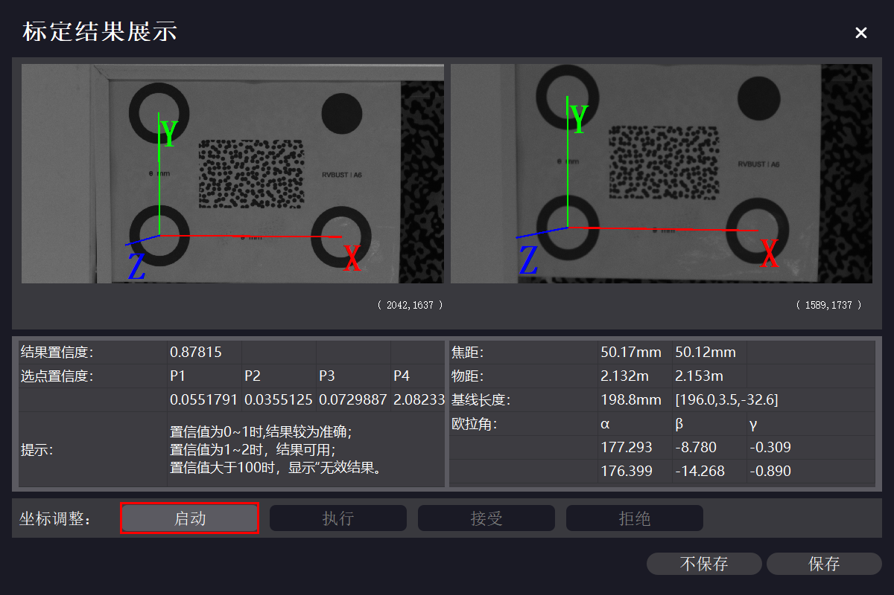
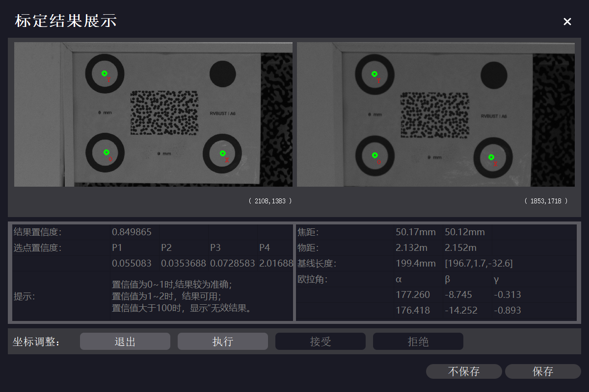
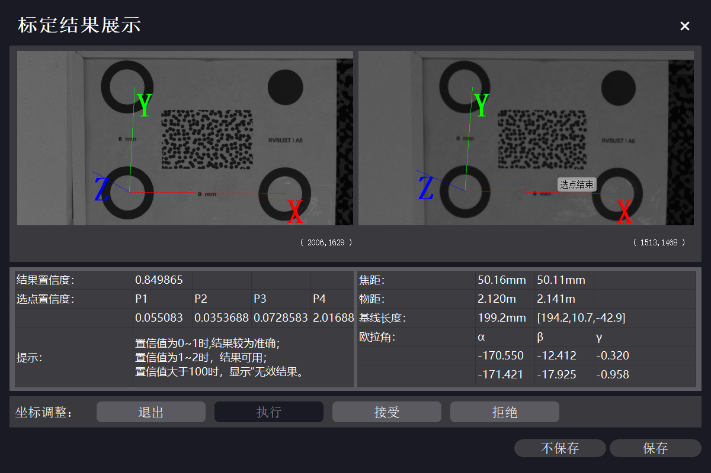

标定
VDA Analyzer 提供激光标定、多点标定两种标定方法，用户可根据不同使用场景选择更适合的方式。本章详述两种标定方法的操作步骤。
| 标定方法 | 支持标定模式 | 速度 | 设备要求 | 适用场景 |
|---|---|---|---|---|
| 激光标定 | 仅在线标定 | 相对较慢 | 必须带有激光测距仪 | 不方便放置标定板、距离太远、无法直接测量的场景。 |
| 多点标定 | 在线标定、离线标定 | 相对较快 | 通用 | 可放置标定板、方便测量的场景。 |
在线标定
操作前，需先按 调整成像效果 调整相机视野、曝光、焦距，使得标定板（或标定区域，后同）位于相机视野范围内，成像清晰且亮度适中。
提示
通常，标定选取的点在视野内间隔较远即可。实际操作中，可选视野宽度的 1/10—1/2 作为点距，即标定板大致占视野宽度的 1/3。
注意
标定时，相机不必与标定板平面垂直，但应使标定板处于目标平面上。
注意
标定完成后，仅允许调节镜头光圈，不允许调节镜头焦距、挪动设备或被测物，否则会影响后续分析工作。
完成调整后，在主界面 → 在线标定配置区，选择设备与对应的镜头高精度文件，并在下拉框中选择“激光标定”或“多点标定”，点击【确认】打开在线标定页。

注意
如果未购买本公司工控机，主界面中镜头高精度文件将显示为空。请联系本公司客服获取高精度文件，将文件夹解压后拷贝至软件安装目录下的 CamCalibConfig 文件夹下。
激光标定
激光标定的原理是通过相机到目标物 3 个指定点的距离建立目标世界坐标系，激光照射的第 1、2、3 点分别确定目标世界坐标系的原点 O、x 轴正方向、y 轴正方向，在软件界面中显示为 O 点、X 点、Y 点。
注意
激光标定时选取的标定面不能反光，否则可能影响识别。
2D 激光标定
-
通过鹰眼盒背面的旋钮调整激光方向，使得相机视图中的激光点照射到所需的原点 O 的位置。
-
单击相机视图中的激光点中心处，触发激光测距，鹰眼盒至激光点的距离将自动记录在标定数据区。按同样的方法，依次用激光确定相机视图中点 X、点 Y 的位置，并完成相应的测距。
注意
选择 X 点时，应使射线 OX 与期望的 x 轴正方向一致；选择 Y 点时，应使射线 OY 与 OX 大致垂直。

-
完成 3 点测距后，点击【标定】。计算完成后将弹出标定结果展示窗口。如果确定使用当前标定结果，点击【保存】，标定数据将自动保存至本地。

3D 激光标定
-
通过左鹰眼盒背面的旋钮调整左激光方向，使得左、右相机视图中，左激光点照射到所需的原点 O 的位置。
-
同样地调整右激光方向，使得左、右相机视图中，左激光点、右激光点与原点 O 的位置均重合。
-
依次单击左、右视图中的激光点中心处，触发激光测距，左、右鹰眼盒至激光点的距离将自动记录在标定数据区。按同样的方法，依次用激光确定左、右相机视图中点 X、点 Y 的位置，并完成相应的测距。
注意
左、右相机的激光点必须重合。激光点重合后，左、右视图中的激光点都需要点击触发测距。
注意
选择 X 点时，应使射线 OX 与期望的 x 轴正方向一致；选择 Y 点时，应使射线 OY 与 OX 大致垂直。

-
左、右相机均完成 3 点测距后，点击【标定】。计算完成后将弹出标定结果展示窗口。如果确定使用当前标定结果，点击【保存】，标定数据将自动保存至本地。

多点标定
多点标定的原理是通过标定板 4 个圆心之间的距离建立目标世界坐标系。标定板下排的 2 个圆心依次记为 P1、P2，上排的 2 个圆心依次记为 P3、P4。P1 确定坐标系的原点 O，P2 确定 x 轴正方向，P3 确定 y 轴正方向，P4 作为坐标系校验点。标定时建议使用 本公司定制的标定板，如有订购需求，请联系本公司销售。
多点标定可自动识别标定板圆心，也可手动选点。若使用标定板进行标定，建议选择自动识别功能；若不方便放置标定板（如测量地点在户外且与设备距离较远），或自动识别失败，可采用手动选点。
自动识别
注意
多点标定自动识别模式下，视野区域内不能有其他明显圆环，否则可能影响识别。
-
使标定板尽可能位于相机视野中心位置。
-
下拉选择标定板规格，在“识别方式”中点选“自动识别”。软件将自动检测标定板的 4 个圆心位置，相机视图中展示 4 个圆心与各点间的理论距离。

-
完成自动识别后，点击【标定】。计算完成后将弹出标定结果展示窗口，视图中显示坐标系，下方显示标定数据。如果确定使用当前标定结果，点击【保存】，标定数据将自动保存至本地。

手动选点
-
在“识别方式”中点选“手动选点”，标定板下拉框选择 NULL。
-
在相机视图中用鼠标左键单击，依次选择 4 个点。P1、P2、P3 分别对应原点 O、x 轴正方向、y 轴正方向，P4 位于 xOy 平面内。如需取消选点，点击鼠标右键逐次取消。
对于 3D 设备，左、右相机视图中各需按此操作选取 4 个点，且左、右相机视图中所选的点应按选取顺序依次对应。
注意
选择 P2 点时，应使射线 P1P2 与期望的 x 轴正方向一致；选择 P3 点时，应使射线 OY 与 OX 大致垂直。

-
通过实地测量或其他方法获取上述 4 点之间的实际距离值，在距离区中输入对应的距离值。数据填写完成后，视图上会显示距离信息，可对比实际物体，检查距离输入是否正确。

-
点击【标定】。计算完成后将弹出标定结果展示窗口，视图中显示坐标系，下方显示标定数据。如果确定使用当前标定结果，点击【保存】，标定数据将自动保存至本地。

离线标定
用 VDA 采集的文件可进行离线标定。当标定结果需要更改时，可使用离线标定功能，利用标定文件复现在线标定场景，重新选点标定。
如果进行过标定，标定文件夹内会生成在线工程标定文件 31415926535A.txt。重新进行标定后，该文件中的标定数据会更新。需要使用新的标定结果时，可将更新后的文件 31415926535A.txt 拷贝至离线数据文件夹，替换之前的版本。
离线标定仅支持多点标定方法，操作步骤如下。
-
准备离线标定文件夹。离线标定文件夹内的必要文件组成见下表。
文件功能描述 2D 版本 3D 版本 相机高精度文件 31415926535A_L.txt 31415926535A_L.txt（左相机）
31415926535A_R.txt（右相机）相机相元大小及点位距离信息文件 CalibrationMsg.txt CalibrationMsg.txt 相机拍摄的标定区域图像 calib_image.bmp left_calib_image.bmp（左相机）
right_calib_image.bmp（右相机）获取离线标定文件夹的方式有 2 种：
-
自动生成：VDA Analyzer 软件使用期间会自动触发拍照。采集的标定文件夹以“Calibration_拍摄时间”的形式命名，默认保存在安装路径下的 VDA_CameraFrame 文件夹内。进行离线标定时，可直接选取对应的文件夹。
-
手动采集：点击【相机控制】，在“基础”选项中点击【拍照】，采集的图像默认保存在安装路径下的 VDA_CameraFrame 文件夹内。新建离线标定文件夹，按上述文件组成，将必备的文件拷贝至文件夹内，并修改图像文件名为指定形式。

-
-
在主界面 → 离线标定配置区，点击【打开标定文件夹】，选择离线标定文件夹。若文件被成功识别，界面将展示标定类型（2D 或 3D）及预览图。点击【下一步】，进入离线标定页。

-
进入离线标定页之后的操作步骤与 在线多点标定 一致。
标定结果参数说明
| 参数 | 2D 版本 | 3D 版本 |
|---|---|---|
| 焦距 | 当前设备使用的镜头焦距 | 当前设备使用的镜头焦距 |
| 物距 | 相机到物体的距离 | 左物距对应左相机到物体的距离，右物距对应右相机到物体的距离 |
| 基线长度 | 无 | 左、右镜头的中轴线距离 |
| 欧拉角 | α 数值对应 x 轴绕角，β 数值对应 y 轴绕角 | α 数值对应 x 轴绕角，β 数值对应 y 轴绕角，γ 数值数值对应 z 轴绕角 |
坐标调整
对于 3D 标定，如果标定结果与实际基本一致，可保存数据，完成标定。若显示结果与实际相差较多，则需进行坐标调整，进行坐标系旋转或平移。
-
在坐标调整栏点击【启动】，在左相机视图中用鼠标左键单击，依次选择 4 个点。P1、P2、P3 分别对应原点 O、x 轴正方向、y 轴正方向，P4 位于 xOy 平面内。如需取消选择，可鼠标右键单击，逐点取消。

-
在右相机视图中，按同样的方法选取 4 个点。左、右相机视野中所选的点应按选取顺序依次对应。

-
选点结束后，点击【执行】。计算完成后，视图中将更新至重新计算的坐标系，下方显示重新计算后的标定数据。

如果对此结果满意，点击【接受】，之后点击【保存】，标定数据将自动保存至本地。如果对此结果不满意，点击【拒绝】，系统将恢复至前一次标定结果，可保留前一次标定结果，或再次进行坐标调整操作。